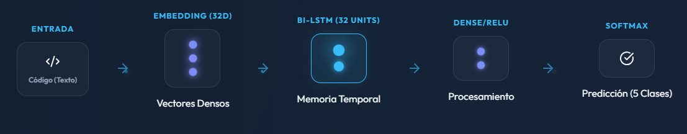
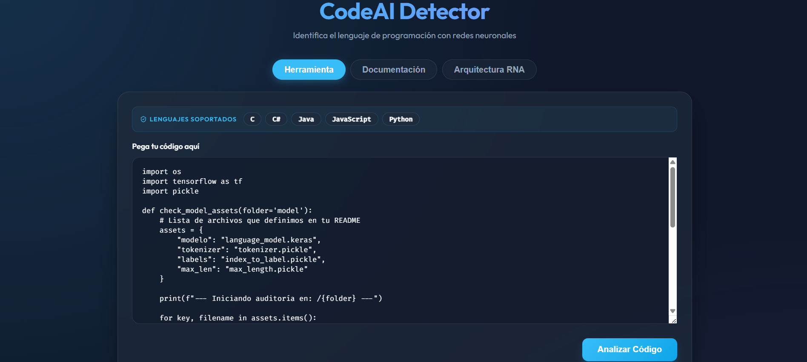
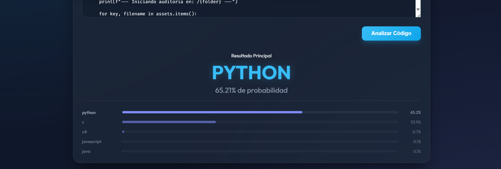
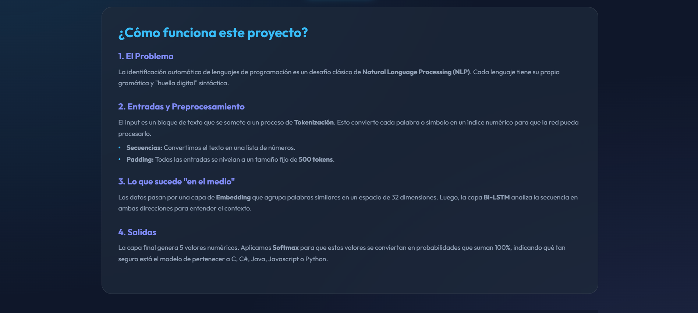
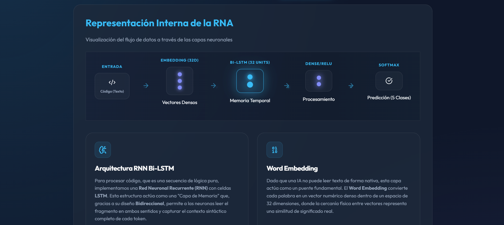
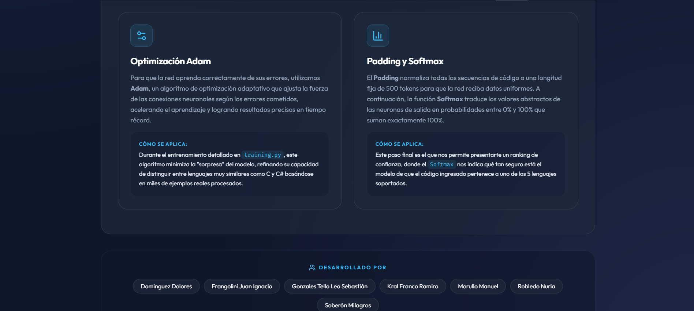

Modelo de IA basado en Redes Neuronales Recurrentes para la identificación de código
Nombre del proyecto: Clasificador de Lenguajes de Programación
Descripción: Sistema de Deep Learning diseñado para identificar automáticamente el lenguaje de programación de un fragmento de código entre 5 clases (C, C#, Java, JavaScript y Python).
Tipo: Proyecto de Investigación en IA / NLP
Rol: Desarrollador de IA / Data Scientist
Fecha: Mayo - Junio 2024
Tecnologías Usadas: Python, Flask, TensorFlow/Keras, RNN (Bi-LSTM), Word Embedding, Adam Optimizer
Colaboradores: Dominguez Dolores, Frangolini Juan Ignacio, Gonzales Tello Leo Sebastián, Kral Franco Ramiro, Robledo Nuria, Soberón Milagros
Probar Herramienta Ver CódigoLa identificación automática de lenguajes de programación es un desafío clásico de Natural Language Processing (NLP). Cada lenguaje tiene su propia gramática y "huella digital" sintáctica, lo que hace que distinguir entre estructuras similares sea una tarea compleja para algoritmos tradicionales.
El reto principal fue diseñar una arquitectura capaz de capturar el contexto semántico y sintáctico del código, reconociendo patrones como la indentación en Python o los delimitadores en Java, para clasificar correctamente fragmentos de lógica pura.
Para abordar este problema, implementamos una Red Neuronal Recurrente (RNN) con celdas Bi-LSTM. Este enfoque permite:
Desarrollamos un modelo optimizado con el algoritmo Adam que logra distinguir con precisión entre lenguajes muy similares (como C y C#) mediante el entrenamiento con miles de ejemplos sintéticos y reales.
El sistema normaliza las entradas a un tamaño fijo de 500 tokens (Padding) y utiliza una capa Softmax final para entregar un ranking de probabilidades, permitiendo que el usuario vea no solo la predicción más probable, sino el nivel de certeza del modelo.
Funciona como una capa de memoria que lee el fragmento en ambos sentidos para identificar patrones estructurales complejos.
Convierte texto en vectores de 32 dimensiones donde la cercanía representa similitud lógica entre tokens de distintos lenguajes.
Algoritmo adaptativo que ajusta el aprendizaje basándose en los gradientes, logrando una convergencia rápida y precisa del modelo.
Garantiza que todas las secuencias tengan la misma longitud y traduce las salidas en porcentajes de probabilidad de 0 a 100%.

Video demostrativo de la clasificación de lenguajes




